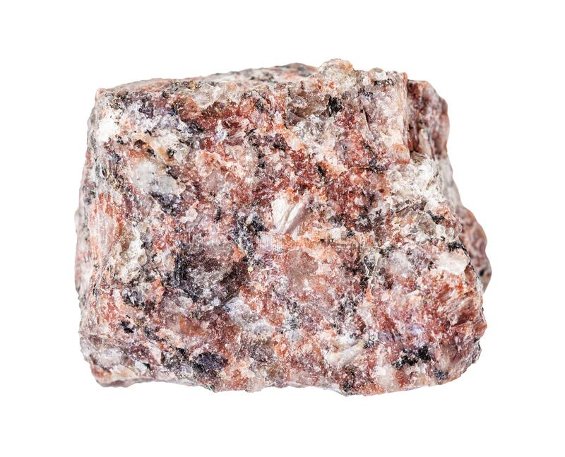
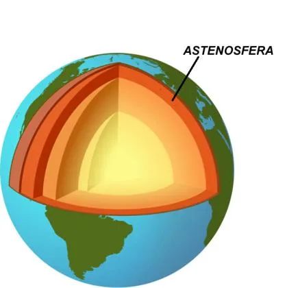

Tipos de Rochas
Rochas magmáticas intrusivas

São rochas formadas nas partes profundas da litosfera, consolidando as massas magmáticas nas
fraturas e
nas falhas, mas não chegando a atingir a superfície. O resfriamento acontece de forma lenta, com a
cristalização de todos os minerais. De modo geral, este tipo de rocha apresenta uma estrutura
maciça.
Como o resfriamento das rochas intrusivas é mais lento, os cristais crescem bastante, deixando as
rochas
com cristais visíveis.
Exemplos: granito, riolito.
Rochas magmáticas extrusivas

São rochas formadas a partir do resfriamento da lava dos vulcões, ou pelo magma expelido através de
fissuras. A
consolidação ocorre na superfície ou nas proximidades dela, sendo que a consolidação é considerada
rápida. Tendo o resfriamento rápido, não há muito tempo para a expansão dos cristais, portanto as
rochas
extrusivas possuem texturas mais finas.
Exemplos: basalto, gabro.
Rochas sedimentares
São rochas que requerem um longo período de formação, ela por meio de
processos físicos, químicos e biológicos. Dessa forma, são acumulados sedimentos (resíduos) que
geram
diversos estratos ou camadas, que logo foram compactados com o passar do tempo. Rochas Sedimentares.
Elas são provenientes de outros tipos de rochas que,
com o passar do tempo, foram sendo constituídas pelo processo de erosão: pela ação do vento, chuva,
gelo,
mares, rios, dentre outros. Por esse motivo, nesse tipo de rocha é possível encontrar diversos
fósseis,
ou seja, vestígios de seres vivos (vegetal ou animal) antigos.
Exemplos: calcário, arenito.

As rochas metamórficas são um dos tipos de rochas que surgem a partir da transformação das rochas
sedimentares ou magmáticas. Elas são formadas por processos físico-químicos que ocorrem pela ação de
diversos fatores relacionados
com a umidade, a temperatura e a pressão no interior da Terra. Assim, para que as rochas magmáticas
sejam desenvolvidas é necessário que aconteça uma transformação nos outros tipos de rochas já
existentes, seja na estrutura, propriedades ou composição.
Exemplos: mármore, quartzito.
O "físico" terrestre
Deriva continental
A deriva continental é uma teoria criada por Alfred Wegener que diz que os continentes eram, há mais
de
200
milhões de anos, uma grande e única massa chamada Pangeia. Esse continente se fragmentou, dando
origem a
dois
outros continentes chamados Laurásia e Gondwana, que ficavam no Hemisfério Norte e Hemisfério Sul,
respectivamente.
Para elaborar essa teoria, Wegener observou que as costas da América do Sul e da África parecem se
encaixar
perfeitamente.
Deslizamento

Os deslizamentos são fenômenos provocados pelo escorregamento de materiais sólidos ao longo de
encostas.
Um dos principais agentes causadores são as chuvas, mas os deslizamentos também podem ocorrer por
causa de terremotos,
erupções vulcânicas e outros motivos. Um deslizamento pode também ocorrer naturalmente em uma área
com a vegetação
intacta, embora a ação humana facilite sua ocorrência.
Dobramentos modernos

Os dobramentos modernos são estruturas geológicas que se originam em virtude do tectonismo
e correspondem à formação de cadeias montanhosas. Os dobramentos modernos, como o nome sugere,
são recentes
sob o
ponto de vista do tempo geológico, tendo cerca de 250 milhões de anos desde o início da sua
formação.
Epicentro

Quando há a ocorrência de terremotos, a região onde ocorre a liberação de energia sísmica
(ondas sísmicas), ou a falha na rocha, é chamada de região focal ou foco sísmico -
hipocentro. O ponto diretamente acima do foco, na superfície da Terra, é chamado de
epicentro. A zona ao redor do epicentro é normalmente a mais afetada por um abalo sísmico.
Epirogênese
É um termo usado para designar uma série de processos que acontecem na crosta terrestre,
podendo ser tanto no sentido de deslocamento ascendente ou descendente. A epirogênese
acontece em vastas áreas continentais de maneira lenta, causando regressões e
transgressões marinhas. Nesse sentido, ocorre um deslocamento vertical destas áreas, sem
falhamentos e fraturamentos de grandes proporções, chamados de soerguimento (para cima)
e subsidência (para baixo).
Graben & horst
Graben é uma porção flacidez da crosta terrestre, que foi formado como um resultado
de falha tectônica e destaca-se entre as partes elevadas e horst é animada sobre as
falhas de blocos da crosta, a formação, como resultado dos movimentos tectônicos.
Intemperismo

Intemperismo é o nome dado aos processos físicos, químicos e biológicos
responsáveis por alterações na estrutura e na composição das rochas afloradas.
Isostasia
A Isostasia (ou movimento isostático) é uma teoria da Geologia que explica o
estado de equilíbrio gravitacional, e as suas alterações, dos blocos
continentais que compõem a crosta terrestre (litosfera) sobre substrato de
material mais denso e plástico existente na astenosfera. Este equilíbrio
depende da densidade relativa de cada uma destas partes e do peso da placa
continental. Assim, sempre que um aumento do peso da placa, por espessamento
ou por deposição de materiais na sua superfície (por exemplo, sedimentos ou
gelo), ocorre um afundamento da mesma; pelo contrário, em caso de redução do
peso (por exemplo por efeito da erosão ou pelo degelo), ocorre uma subida
(chamada re-emergência ou rebound).
Limite divergente
Um limite divergente ocorre quando duas placas tectônicas se afastam
umas das outras. Por baixo da fenda, o magma — rocha derretida — sobe do
manto. Ele escorre pela fenda e endurece em rocha sólida, formando uma
nova crosta nas bordas rasgadas das placas. Já o limite convergente é
quando duas placas se juntam. O impacto das duas placas colidindo faz
com que a borda de uma ou ambas as placas atinja uma cordilheira
acidentada, e às vezes inclina a outra para uma vala profunda no fundo
do mar.
Abalos sísismicos
Abalos sísmicos correspondem a terremotos ou tremores de terra, é um fenômeno natural que faz com
que a superfície terrestre trema. Para sua ocorrência são necessários vários fatores determinantes.
Os agentes que provocam terremotos se desenvolvem no interior da Terra, podem ser a partir de
movimentos de placas tectônicas ou tectonismo e por atividade vulcânica ou vulcanismo, ambos
acumulam uma grande quantidade de energia que para ser liberada é expelida pelas fendas das rochas e
aberturas de vulcões, essa liberação é o terremoto propriamente dito.
Astenosfera

A Astenosfera é a camada da Terra formada pela região superior do manto, apresentando um aspecto
mais fluido e pastoso, com um magma que se encontra em constante movimento.
Bacias Sedimentares
Bacias Sedimentares são formações rochosas localizadas em áreas de depressões relativas ou
absolutas, que acumulam espessas camadas ou estratificações formadas por rochas sedimentares.
Caracterizam-se por serem formadas a partir da deposição de material sedimentar que, ao longo de
milhões de anos, consolida-se e transforma-se em formações rochosas.
Correntes de Convecção
As Correntes de Convecção da Terra (também chamadas de Células de Convecção) são os movimentos dos
fluidos internos que se realizam no manto, abaixo da crosta terrestre. Acredita-se que elas sejam as
grandes responsáveis por inúmeros processos de transformação do relevo de origem endógena, como
terremotos, vulcanismos, tectônica de placas, entre outros.
Crosta
A Crosta Terrestre é a menor e a mais externa entre as camadas do planeta Terra. É nela que se
realizam as transformações do relevo e onde se expressam morfologicamente todos os processos
internos e externos que ocasionam a sua formação e transformação.
Erosão
Erosão é o processo de desgaste, transporte e sedimentação do solo, dos subsolos e das rochas como
efeito da ação dos agentes erosivos, tais como a água, os ventos e os seres vivos.
Falésias
Falésias são formações instáveis e frágeis presentes ao longo do litoral. Elas são fruto
principalmente da atuação da água do mar na erosão do relevo litorâneo.
Fossa Oceânica
A fossa oceânica é uma grande depressão que se forma no oceano em consequência dos movimentos
convergentes das placas tectônicas.
Geologia
Geologia é uma ciência natural que estuda a Terra. Do grego, o termo geologia é formado pelos
vocábulos “geo” (Terra) e “logia” (estudo ou ciência). O geólogo é o profissional e especialista em
geologia.
Evolução
Desde sua origem, há 4,56 bilhões de anos, a Terra já sofreu inúmeras mudanças geológicas. Apesar da
aparente estabilidade, os continentes se mantem em constante movimento e algum dia podem até se
partir, fazendo com que algumas cordilheiras surjam e outras desapareçam. Tudo faz parte de um ciclo
geológico.